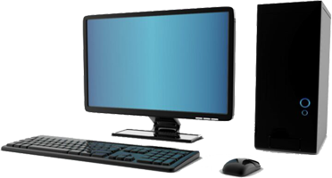

- Системный блок
- Материнская плата
- Процессор
- Монитор
- Клавиатура
- Мышь
- Процессор - электронный блок либо интегральная схема, исполняющая машинные инструкции (код
программ), главная часть аппаратного обеспечения компьютера или программируемого логического
контроллера.
- Монитор — это устройство оперативной визуальной связи пользователя с управляющим устройством и
отображением данных, передаваемых с клавиатуры, мыши или центрального процессора.
- Клавиатура — устройство, позволяющее пользователю вводить информацию в компьютер (устройство
ввода).
- Мышь — координатное устройство для управления курсором и отдачи различных команд компьютеру.
- Озу - энергозависимая часть системы компьютерной памяти, в которой во время работы компьютера
хранится выполняемый машинный код (программы), а также входные, выходные и промежуточные данные,
обрабатываемые процессором.
- Жесткий диск — запоминающее устройство (устройство хранения информации, накопитель) произвольного
доступа, основанное на принципе магнитной записи.